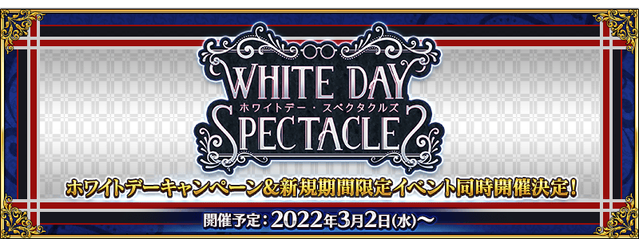
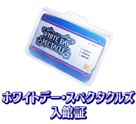
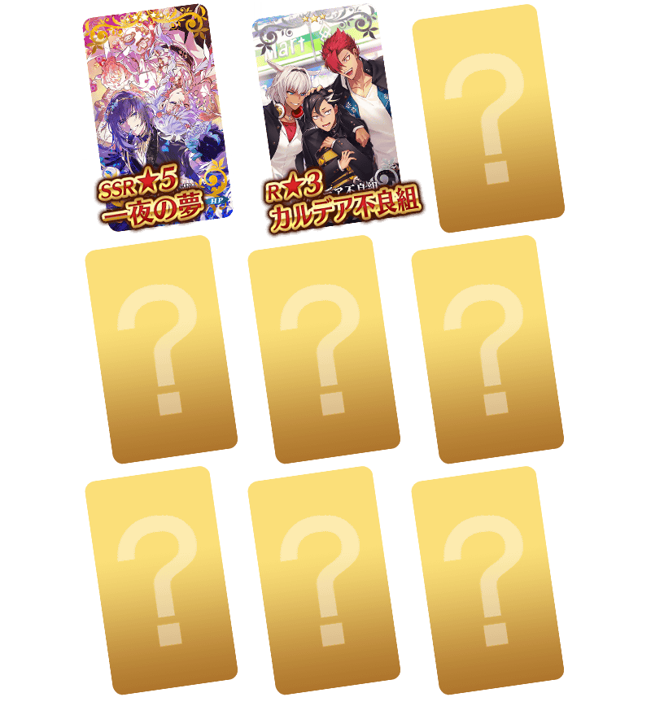
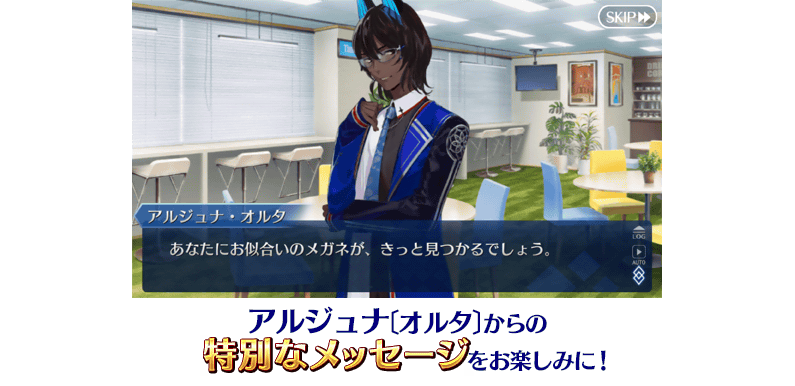

◆舉辦預定◆
2022年3月2日(三) 17:00～(預定)
※本頁面皆為開發中圖片。會有與實際圖片相異的情況。

配合每個概念禮裝的情境，新追加可聆聽從者們互動和台詞的附語音概念禮裝！
在宣傳活動期間中登入的話，贈送可交換1張「White Day Spectacles」期間限定概念禮裝的「White Day Spectacles入館證」！
舉辦預定的期間限定活動「15人的理智眼鏡們」的活動商店中，使用「White Day Spectacles入館證」後可從交換對象概念禮裝之中選擇1張喜愛的交換！
介紹成為本次交換對象的一部份概念禮裝！
◆交換對象◆


期間中，實施在初次登入時播放來自阿周那〔Alter〕訊息的登入獎勵！
並且在做為期間限定登入獎勵最終日的白色情人節當天除了會播訪特別訊息外，贈送迦勒底的夢火1個！
期間中，每天來得到豪華報酬吧！


做為「White Day Spectacles」的一個內容，舉辦期間限定活動「15人的理智眼鏡們」！
期間限定活動中，可入手除了靠活動道具交換的「★5(SSR)阿周那〔Alter〕」靈衣「擔任學生會長的阿周那」開放權外，13位的眼鏡靈衣的開放權。
關於活動內容，請自下述的橫幅確認。
◆活動舉辦期間◆
2022年3月2日(三) 17:00(預定)～
『「白色情人節2022」舉辦前夕宣傳活動』在「White Day Spectacles」舉辦前率先以期間限定舉辦中！
關於詳情，請自下述橫幅確認。
■「白色情人節2022」舉辦前夕宣傳活動詳細情報